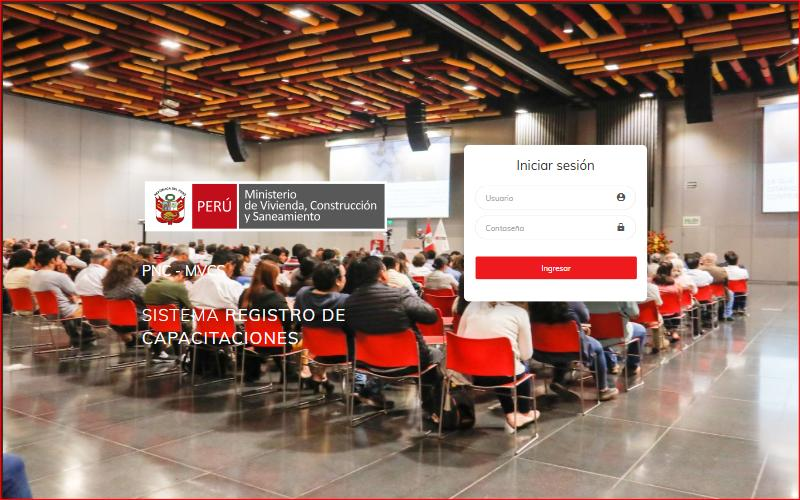
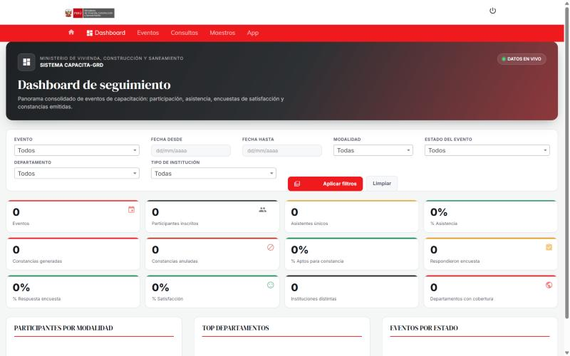
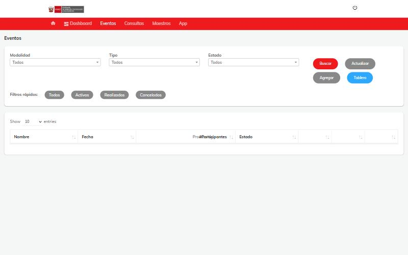
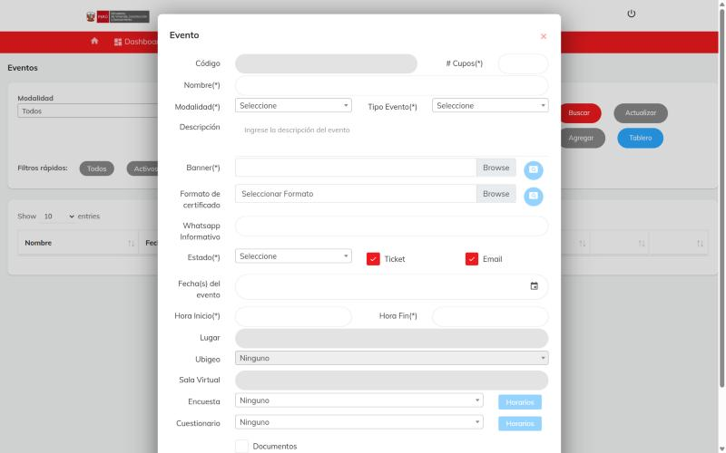
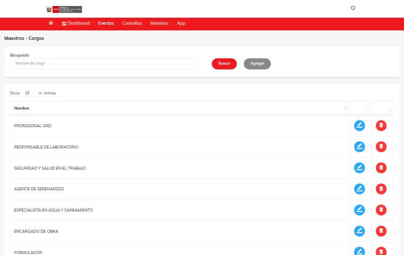

Nota: estas capturas fueron tomadas de una instancia local de desarrollo con datos de prueba.
No es un ambiente en vivo ni contiene información real de personas o entidades.

01
Inicio de sesión
Acceso al panel administrativo con usuario y contraseña, identidad institucional del Ministerio de Vivienda, Construcción y Saneamiento.

02
Dashboard de seguimiento
Panorama consolidado de eventos: participación, asistencia, encuestas de satisfacción y constancias emitidas, con filtros por fecha, modalidad y departamento.

03
Gestión de eventos
Listado de capacitaciones con filtros rápidos por estado (activos, realizados, cancelados) y acceso a su tablero individual.

04
Creación de evento
Formulario para registrar un nuevo evento: modalidad, cupos, banner, certificado, encuesta y cuestionario asociados.

05
Maestros del sistema
Catálogos configurables (cargos, profesiones, distritos, países, documentos) que alimentan los formularios de registro.